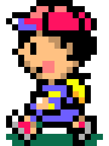
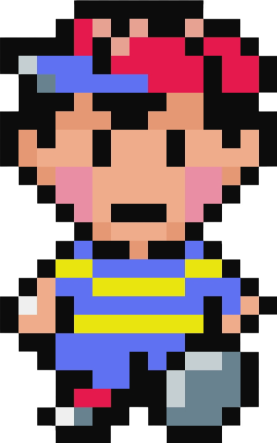
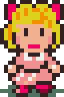
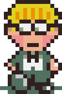
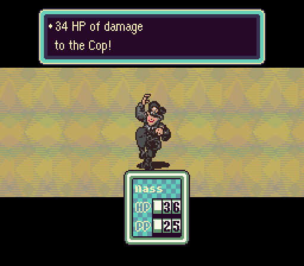
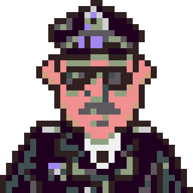

Earthbound - японская ролевая игра, прямиком из 1996
года

Персонажи

Ness
Мальчик из маленького города Онетт. Протагонист в EarthBound. Он
одарённый мальчик, обладающий психическими силами и
силой, позволяющей записывать мелодию из восьми священных мест в звуковой камень. После очищения
своего разума от зла,
Несс полностью осознаёт свои силы и становится сильнейшим героем в команде.

Paula
Девочка из Тусона, является вторым главным
персонажем. Имеет развитые навыки ПСИ. Паула очень
известна в Тусоне из-за её способностей и дружелюбия в школе Полстар.

Jeff
Мальчик из города Уинтерс, является одним из четырёх главных героев в
игре EarthBound. В отличии от своих товарищей по
команде, он не может использовать ПСИ, но из-за высокого интеллекта и возможности чинить
металлолом и другие сломанные
вещи, Джефф является очень полезным членом команды.

Pu
Принц Далаама, четвёртый и последний главный персонаж из игры
EarthBound. После завершения тренировки Му, его
учитель раскрывает, что он один из четырёх избранных, и что он должен вместе с Нессом повергнуть
Гийгаса.
Причины поиграть:
1. Подеритесь с полицейским, играя за 11 летнего ребёнка

*не рекомендуется к нажиманию людям с проблемами с сердцем

Персонажи
Ness
Мальчик из маленького города Онетт. Протагонист в EarthBound. Он одарённый мальчик, обладающий психическими силами и силой, позволяющей записывать мелодию из восьми священных мест в звуковой камень. После очищения своего разума от зла, Несс полностью осознаёт свои силы и становится сильнейшим героем в команде.
Paula
Девочка из Тусона, является вторым главным персонажем. Имеет развитые навыки ПСИ. Паула очень известна в Тусоне из-за её способностей и дружелюбия в школе Полстар.
Jeff
Мальчик из города Уинтерс, является одним из четырёх главных героев в игре EarthBound. В отличии от своих товарищей по команде, он не может использовать ПСИ, но из-за высокого интеллекта и возможности чинить металлолом и другие сломанные вещи, Джефф является очень полезным членом команды.
Pu
Принц Далаама, четвёртый и последний главный персонаж из игры EarthBound. После завершения тренировки Му, его учитель раскрывает, что он один из четырёх избранных, и что он должен вместе с Нессом повергнуть Гийгаса.
Причины поиграть:
1. Подеритесь с полицейским, играя за 11 летнего ребёнка
*не рекомендуется к нажиманию людям с проблемами с сердцем